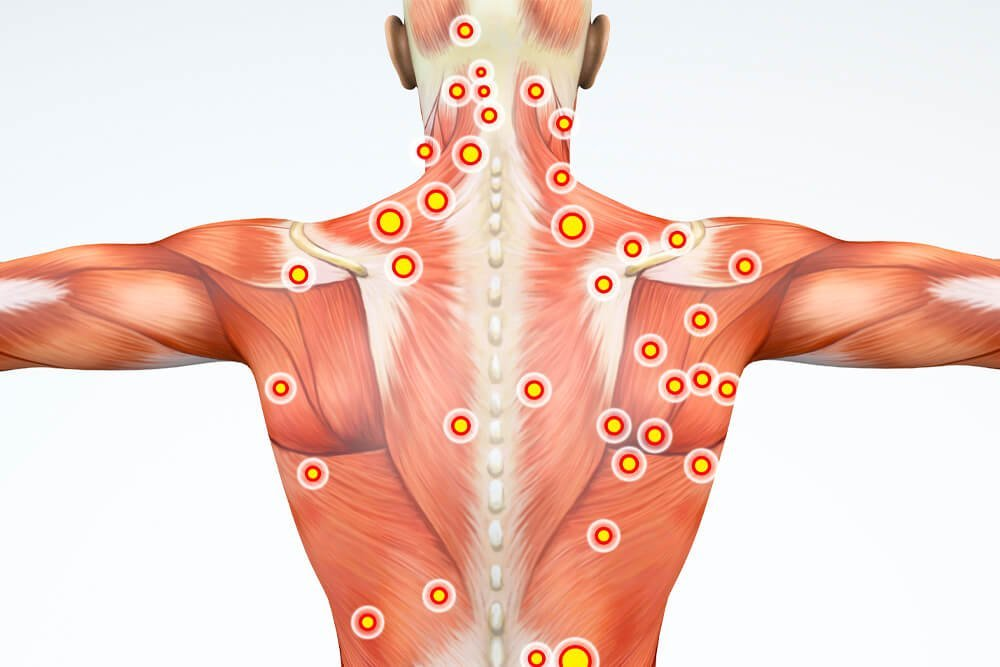
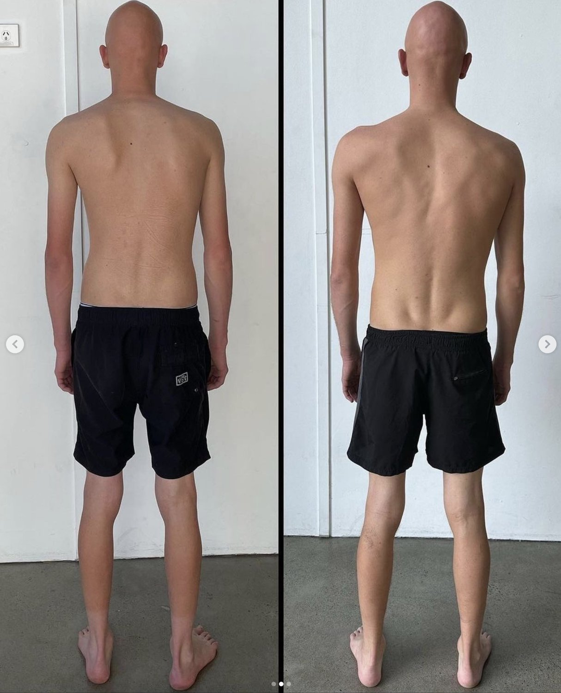

We are going to go over the steps involved in this naturally scoliosis transformation:

Naturally Straightened Scoliosis - Functional Patterns Brisbane Client
Both photos are in a relaxed posture
-
Improved scoliosis
-
Improved thoracic extension
-
Improved scapular positioning
-
No more neck and back pain
-
Ribcage more neutral
-
Increased muscle mass
“I came into @fp_brisbane with back and neck pain that was limiting my work and social life. After training with FP protocols I am now totally pain free and feeling much more athletic than ever.
Thanks to Max for his enormous efforts in addressing the multiple dysfunctions with my body. Looking forward to continue training hard and smashing these dysfunctions with FP protocols”
— Kynan
Scoliosis, a condition marked by spinal curvature, can be a significant challenge. But the story of Kynan's transformation using Functional Patterns protocols is a testament to the power of biomechanics and holistic approaches. Let's walk through the journey of how Kynan reversed his scoliosis and regained his quality of life.
Step 1: Gait Analysis and Postural Assessment
The journey began with a meticulous gait and postural analysis. By identifying shifts, drops, abnormal rotations, poor hip-rib connection, and abnormal intra-abdominal pressure, we pinpointed the root causes of Kynan's scoliosis. This insight was vital in creating a tailored plan.
Gait analysis is the best tool for assessing scoliosis because it provides a comprehensive evaluation of a person's walking pattern, including the movement of their joints, muscles, and other body segments during walking. When you have your gait analysed by one of our specialists, you will be able to see the exact moments that contribute to your scoliosis. For example, when your right foot hits the floor, one of your leg muscles may switch off, your hips may shift to the fight and your ribcage may shift left to compensate. This is just a random example, of course, but it illustrates the genius of gait analysis for scoliosis.
The principle behind gait analysis is that it allows our practitioners to observe and quantify the various components of a person's gait cycle and identify any abnormalities or asymmetries that may be affecting their day-to-day life and any training they partake in. This means you will leave your assessment with concrete, objective measurements that will help you to gain a deep understanding of the causes and contributors of your scoliosis.

Step 2: Rehydrating Muscles with Myo-Fascial Release
To kickstart the process, myo-fascial release was employed. This technique aimed to rehydrate Kynan's muscles and tissues. Well-hydrated tissues not only function better but also respond well to corrective exercises.
Dehydrated fascia can contribute to scoliosis due to its vital role in maintaining structural integrity and balance within the body. Fascia, a connective tissue network that surrounds muscles, organs, and other structures, acts as a supportive framework that ensures efficient load distribution and movement. When fascia becomes dehydrated, it loses its elasticity and pliability, which can disrupt its ability to properly support the body's alignment and movement patterns. Two primary reasons that dehydrated fascia plays a role in the cause and the cure of scoliosis include:

-
Loss of Elasticity: Hydrated fascia is elastic and flexible, allowing it to adapt to movement and changes in body position. Dehydration causes fascia to become stiff and rigid, limiting its ability to stretch and accommodate normal movement. This lack of flexibility can result in imbalanced forces being exerted on the spine, potentially leading to abnormal curvatures characteristic of scoliosis.
-
Altered Load Distribution: Fascia plays a crucial role in distributing mechanical forces throughout the body. Dehydrated fascia may not evenly distribute these forces, leading to uneven pressure on different parts of the spine. This imbalance can contribute to the development of scoliosis by encouraging the spine to curve in response to the uneven stresses placed upon it.
Step 3: Reposition, Stabilise, and Strengthen
Addressing the imbalances involved repositioning Kynan's body for better alignment. The focus was on stabilising muscles to ensure proper firing patterns. This stage was crucial in ensuring that his newfound alignment persisted. This involved slower, therapeutic movements targeting at ensuring Kynan was able to fire the correct muscles in the correct sequences.
Step 4: Dynamic Exercises for Sustainable Results
As Kynan's stabilisation improved, dynamic exercises were introduced. These exercises played a pivotal role in reinforcing the corrected alignment and functional patterns, setting the stage for lasting results.
Dynamic exercises are particularly important for creating lasting changes to the spine because they address the underlying causes of scoliosis by actively engaging the body's proprioceptive system, addressing torsion, and correcting poor movement patterns. Unlike passive or still exercises, dynamic exercises involve active movement, which provides a more comprehensive approach to spinal correction and alignment. Here's why dynamic exercises are crucial:
-
Proprioceptive Engagement: Proprioception refers to the body's awareness of its position in space and the ability to sense movement. Dynamic exercises require individuals to engage their proprioceptive system, enhancing their awareness of how their body is moving. By incorporating proprioception, dynamic exercises encourage individuals to make conscious adjustments to their movements, helping to retrain the nervous system and promote better alignment.
-
Torsion Correction: Scoliosis often involves rotational or torsional components, where the spine twists along its axis. Dynamic exercises incorporate movements that challenge and correct torsion, helping to unwind and realign the spine. Through controlled rotational movements and coordinated muscle activation, dynamic exercises address the asymmetrical forces that contribute to scoliotic curvature.
-
Movement Patterns and Muscle Imbalances: Poor movement patterns and muscle imbalances are root causes of scoliosis. Dynamic exercises focus on functional movement patterns, which mimic real-life activities and promote balanced muscle activation. By engaging multiple muscle groups in a coordinated manner, dynamic exercises help reprogram the body's movement patterns, reducing the dominance of certain muscles and improving overall symmetry.
-
Muscle Coordination and Stabilisation: Dynamic exercises require the coordination of various muscle groups to perform complex movements. This engagement promotes the activation of stabilising muscles that are essential for maintaining spinal alignment. Through dynamic exercises, these stabilising muscles are trained to work together synergistically, providing better support and stability for the spine.
-
Neuroplasticity and Lasting Changes: Dynamic exercises stimulate neuroplasticity, which is the brain's ability to reorganise and adapt in response to new experiences and stimuli. By consistently engaging in dynamic exercises, individuals can promote neuroplastic changes that lead to lasting improvements in movement patterns, alignment, and muscle activation. These changes are more likely to become ingrained in the nervous system compared to passive or still exercises.
Step 5: Dietary Protocol and Lifestyle Interventions
Holistic healing extends beyond exercise. Kynan also adopted a dietary protocol aimed at enhancing core tension and modulating intra-abdominal pressure. Lifestyle interventions addressed stress, sleep, and overall well-being, creating a supportive environment for transformation.
Bloating, even subclinical or ‘unnoticeable’ bloating, can contribute to scoliosis through its impact on alterations in intra-abdominal pressure (IAP), which in turn affects the biomechanics and alignment of the spine. Intra-abdominal pressure refers to the pressure within the abdominal cavity created by the contents of the abdomen, including organs and gases. Here's how bloating and changes in intra-abdominal pressure can influence scoliosis:
-
Influence on Core Stability: A stable core is essential for maintaining proper spinal alignment and preventing excessive stress on the spine. Bloating, often caused by excess gas or fluid accumulation in the abdomen, can disrupt the natural balance of intra-abdominal pressure. This imbalance can affect the engagement of the deep core muscles, such as the transverse abdominis and pelvic floor muscles, which play a critical role in stabilising the spine. When core stability is compromised, it can lead to asymmetrical loading and misalignment of the spine, potentially contributing to scoliotic changes.
-
Altered Weight Distribution: Bloating can create an uneven distribution of weight within the abdominal cavity. This uneven weight distribution can lead to imbalanced forces on the spine, causing it to curve or twist in response to the abnormal pressures. Over time, these forces can contribute to the development or progression of scoliosis.
-
Impact on Connective Tissues: Bloating can affect the tension and pressure within the abdominal fascia and other connective tissues, potentially leading to alterations in movement patterns and spinal alignment.
Results: A Transformative Success Story
Kynan's progress was nothing short of remarkable. His scapular positioning improved, scapular winging reduced, and both neck and back pain vanished. His ribcage achieved a more neutral alignment. Kynan's improved state not only positively impacted his work ethic and productivity but also allowed him to enjoy a better work-life balance.
Embrace the Power of Functional Patterns
Kynan's journey exemplifies the potential of Functional Patterns protocols. By addressing biomechanics, imbalances, and overall well-being, scoliosis can be reversed naturally. This holistic approach not only restores alignment but also elevates one's entire quality of life.
Are you ready to rewrite your story like Kynan did? Discover the transformative power of Functional Patterns and embark on your journey towards a naturally improved scoliosis. By restoring balance, realigning your body, and incorporating the principles of Functional Patterns, you can achieve lasting results that empower you to live pain-free and with vitality. Your path to a straighter spine and a life of better movement starts now.
